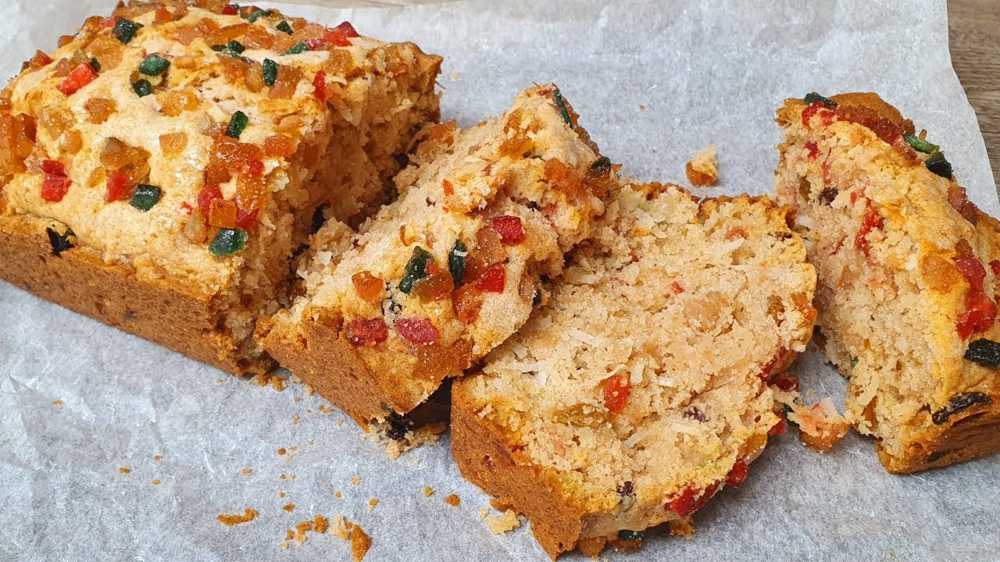

Sweet Bread Recipe

Description
Sweet bread is a traditional Trinidadian loaf made with grated coconut, dried fruits, and warm spices like cinnamon and nutmeg. Rich, moist, and slightly dense, it’s often enjoyed during holidays and special occasions. The bread has a subtly sweet flavor and is sometimes topped with a sugary glaze or extra coconut for added texture and taste.
Ingredients
Dry Ingredients
- 4 cups all-purpose flour
- 2 teaspoons baking powder
- ½ teaspoon baking soda
- 1 teaspoon cinnamon
- ½ teaspoon nutmeg
- ½ teaspoon salt
Wet Ingredients
- 1 cup brown sugar
- ½ cup melted butter
- 1 cup grated coconut (fresh or desiccated)
- ½ cup raisins (optional)
- ½ cup mixed dried fruits (optional)
- 1 teaspoon vanilla extract
- 1 teaspoon almond essence
- 1 cup evaporated milk (or coconut milk)
- ½ cup water (as needed to form dough)
Topping (Optional):
- 2 tablespoons sugar
- 2 tablespoons grated coconut
- A little milk for brushing
Steps
- Preheat the oven to 350°F (175°C). Grease two loaf pans and set aside.
- Mix dry ingredients: In a large bowl, sift together the flour, baking powder, baking soda, cinnamon, nutmeg, and salt.
- Combine wet ingredients: In another bowl, mix the brown sugar and melted butter until well blended. Stir in the grated coconut, raisins, dried fruits (if using), vanilla extract, and almond essence.
- Combine wet and dry: Add the wet coconut mixture to the dry ingredients and mix well.
- Add liquid: Gradually add the evaporated milk and enough water to form a thick, sticky batter — not too runny and not too stiff.
- Pour into pans: Divide the mixture evenly into the prepared loaf pans.
- Optional topping: Mix a bit of sugar and grated coconut and sprinkle over the tops. Brush lightly with milk for a golden finish.
- Bake: Place in the oven and bake for 50 to 60 minutes, or until a toothpick inserted in the center comes out clean and the top is golden brown.
- Cool: Remove from oven and let cool in the pans for 10 minutes, then transfer to a wire rack to cool completely.
Enjoy!
Home